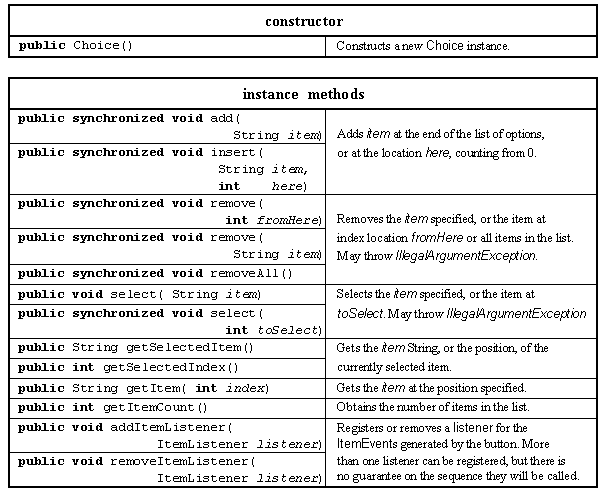
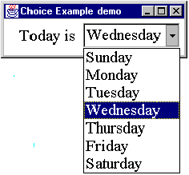

The Choice class provides an option menu which allows the user to select a single option from a list of choices. The major resources of this class are given in Table 2.14.

Table 2.14 Major resources of the Choice class.
An instance of the Choice class encapsulates the list of Strings, known as items, which will be presented to the user on the option menu. These are added to the list using the add() or insert() method after the instance has been constructed and can be removed using one of the remove() methods or the removeAll() method. If one of the select() methods is not used to indicate which item should be initially selected the first item added is selected by default. The countItems() method will to determine how many items are in the list, getItem() will obtain an item given its index and the currently selected item can be obtained as an integer value with getSelectedIndex() or as a String with getSelectedItem().
When an item in the list is selected an ItemEvent instance is generated and passed as an argument to each of the itemStateChanged() methods of the Listener objects registered with addItemListener().
The following init() method from a class called ChoiceExample creates a Choice instance and adds seven items enumerating the days of the week. It is preceded by a Label providing a prompt for the options.
0018 private Choice dayChoice;
0019
0020 public void init() {
0021
0022 Label promptLabel;
0023
0024 dayChoice = new Choice();
0025 dayChoice.addItemListener( this);
0026
0027 dayChoice.addItem( "Sunday");
0028 dayChoice.addItem( "Monday");
0029 dayChoice.addItem( "Tuesday");
0030 dayChoice.addItem( "Wednesday");
0031 dayChoice.addItem( "Thursday");
0032 dayChoice.addItem( "Friday");
0033 dayChoice.addItem( "Saturday");
0034
0035 promptLabel = new Label( "Today is ", Label.RIGHT);
0036
0037 this.add( promptLabel);
0038 this.add( dayChoice);
0039 } // End init.
This fragment need not specify a LayoutManager explicitly as the default FlowLayout is appropriate. The appearance of this interface is shown in Figure 2.7.

Figure 2.7 Choice example showing days of the week.
A minor change was made to the itemStateChanged() method, as follows, to allow for the consideration that the only possible ItemSource for the event must be the dayChoice instance.
0042 public void itemStateChanged( ItemEvent event) {
0043
0044 if ( event.getItemSelectable() == dayChoice) {
0045 System.out.println( "Item Selectable is dayChoice.");
0046 } // End if.
The output produced when "Friday" was selected was as follows and is comparable with the previous outputs.
Item Selectable is dayChoice. Item is Friday State Change is Selected ID is ITEM_STATE_CHANGED.
This illustrates the distinction between the item and itemSelectable attributes of an ItemEvent instance which might not have been obvious from the previous examples. The itemSelectable attribute always identifies the Component which generated the event and the item attribute the precise part of the Component which was selected; for CheckBoxes this was always the label which they were displaying but for Choice components it can be any of the items on its list.
Design Advice
An option menu must always have one item selected. A set of radio buttons can have zero items selected, but this should be avoided as it would confuse the user. Radio buttons should be avoided when there are more than about 5 alternatives or when screen space is tight.